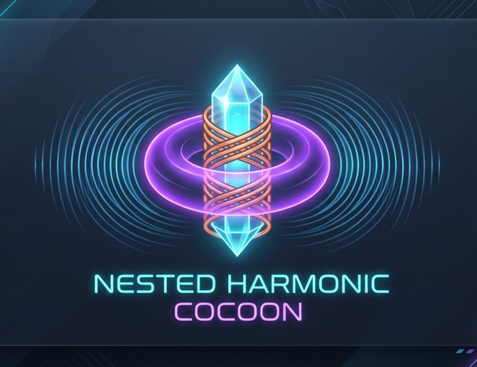

Cymatics is the study of visible sound — the standing-wave patterns that appear in a medium (sand, water, plasma) when it is driven at a resonant frequency. The Nested Harmonic Cocoon project asks a simple question: what happens when that same principle is extended past three dimensions, into the layered harmonic lattices that traditions like Enochian geometry and the rotating dual-tetrahedron merkabah have described symbolically for centuries?
Instead of treating those systems as separate from the physics, this hub treats them as coordinate maps — grids of harmonic distance that tell you which frequencies reinforce each other, which cancel out, and where the stable "eye" of a multi-layered resonant field sits. The goal is to find the maximum effective frequency alignments for encapsulating a person in that field, and to use it as a tunable interface for the mind's eye: the internal, non-optical visual sense that meditation, sensory deprivation, and altered-perception techniques all engage in different ways.
Each section below is a self-contained module: a short explanation of the underlying phenomenon, followed by an interactive tool built directly on top of that math. Work through them in order if you're new to the project — the Mind's Eye Interface section builds the harmonic vocabulary that the later sections assume.
Cymatics in higher dimensions. The 23×23 Enochian tablet as a harmonic distance field, rendered as a rotatable voxel hexagram and an interactive holy-table projector, used to align counter-rotating frequency pairs for merkabah-style meditation.
Enter SectionWhat happens when the visual field goes uniform. An introduction to Ganzfeld-induced perception and the idea of interlaced realities, paired with a fully tunable generative field generator for building your own Ganzfeld sessions.
Enter SectionEach module below has a written build guide already available. The interactive CAD/simulator tool for each is still on the drawing board.